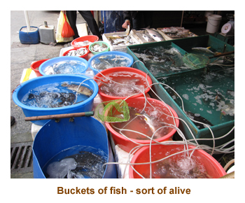
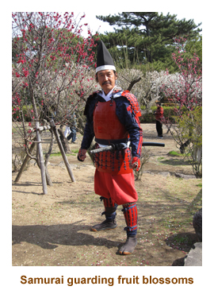

[ Home ] [ Travel ] [ Photography ] [ Pets ] [ Games] [ Rowing] [ Physics ]


Cruising on the Diamond Princess
- at sea - Kee Lung (Taipei) - at sea - Nagasaki, Japan - at sea - Shanghai - at sea - Dalian - Tianjin (Beijing)
Travel
Cruises
Past Cruises (Diaries)
Future Cruises
Rogues Galleries
Land Trips
Diaries (Land Trips)
Hawai'i - Big Island - 04'01
Hawai'i - Maui - 05'02
Hawai'i - Big Island - 04'03
Hawai'i - Kaua'i - 09'04
Hawai'i - Big Island - 04'06
Hawai'i - Maui - 04'06
Mainland China - 05'07
Phoenix, Arizona - 12'07
Greek Isles - 05'08
Hawai'i - Kaua'i - 09'08
Hawai'i - Big Island - 09'09
Hawai'i - Maui - 05'12
Hawai'i - Big Island - 04'13
Ireland - 08'13
Mexico - Cancun 11'13
France/Belgium/Lux 07'15
Hawai'i - Big Island - 05'17
England / Wales - 06'17
Hawai'i - Big Island - 09'19
Photography
Cameras
Underwater
Pets
Tara
Blackie
Whitey
Muffy
Ollie
Rusty
Fluffy
Rufus&Dufus
Games
Rowing
Physics
Rating (out of 5): Ship  Food
Service
Food
Service  Itinerary
Itinerary
This was the second leg (23 days) of our back-to-back cruise from Auckland to Beijing. The leg began in Sydney, Australia. To see the earlier portion of the cruise, please go to the Auckland to Sydney diary.
For the second leg, we were being joined by our friends Alan and Glenys from Sydney,
and Peter and Glenda from Melbourne. As all the strangers climbed aboard, we had some
good friends boarding too. From the previous leg, our trivia mates Ray and Mary Jane were
staying on to Beijing. And finally, also from the previous leg, were John and Linda who became
our "sticks" buddies on those many sea days.
Day 1 (Feb 8) - (Re)Boarding in Sydney
Continuing on from the previous diary, we reboarded the ship about 1:30 PM for lunch. At the cruise terminal there was a special entrance for continuing passengers, so we got to skirt the lineup for all the people just checking in. We had lunch and then headed off the ship to find an IGA and do a little grocery shopping. There was a large IGA just a few blocks from the ship. Marjorie got some juices and chocolate bars, and I got a 24 pack of Coke. I knew that the free 20 pack from the ship wouldn't last for 23 days. Back on the ship again, I phoned room service for another 20 cans of Coke for the second leg. Now I was set! Being a turnaround day, the gym was closed and there was no trivia. However, it was beautiful sunshine by this time so I took some photos from the ship (there was lots of traffic in the harbour) and then sat on our balcony and read my book. It was quite warm outside, but nothing like the 42 degrees they had had the previous week. For dinner I had prime rib. We skipped the entertainment.
Note: the internet guy told us today that there was a problem
with the satellite tracking hardware and we might not have internet until
Beijing. As it turned out, it wasn't as drastic as that but the internet
was up and down like a yo-yo for most of the cruise.
Days 2 - 4 (Feb 9 - 11) - At sea , then Port Douglas
Days 2 & 3 - After leaving Sydney, we had two days at sea. It
was very warm and humid as we cruised up the east coast of Australia.
This is the area (north of Brisbane) that suffered massive flood damage
the previous month. Our two sea days were typical - food, trivia, lectures,
gym and Corner Gas. On the first sea day, we attended a Cruise Critic
get together at 11:00 AM, where we met all of the CC folks that we had
been "chatting" with prior to the cruise. We also re-aquainted with our
good friends Alan and Glenys, and Peter and Glenda, and met the other
two couples (Kathie and Craig, and Rene and Sandra) who were joining us
later for the Beijing tour. After the meeting, the 6 of us (A&G, P&G)
went for lunch together. In the afternoon, Marj and I played some sticks.
It was formal night, so we did the buffet. Afterwards we went to see a
comedian. He was very good. On the second sea day, we had a day on our
own (other than trivia). Our trivia team for the bulk of the cruise settled
down to Ray and Mary Jane, Alan and Glenys, and Marj and I. For dinner
I had the leg of lamb. We skipped the entertainment as it was a repeat
of the previous night.
Day 4 - We arrived at Port Douglas about 8:00 AM and anchored. It was hot (30 + degrees), very humid and cloudy. We had done the Great Barrier Reef last March, so this time we signed up for an all day tour on land. We were cleared to disembark at 9:00, but for some reason we didn't leave on the tender until 10:00. It was a good half hour on the tender to the dock area in Port Douglas. It was the same dock used by Quicksilver reef expeditions which we had done the previous year, and the huge catamaran that we had travelled on was at the dock. Then we had an hour bus ride to Cairns. We arrived in Cairns at the cable car station about 11:30, an hour late! As a result, we had to hurry through some parts of the tour. We were onto the gondola by noon. The cars were quite small - about 4 people per car. The ride up over the trees was wonderful and the view was magnificant (if only it was sunny!). The gondola stopped twice along the way where you could get off to walk around a wooden nature trail. We hustled around the first trail, but didn't try to do the second one. That got us to the village of Kuranda by 12:45 - plenty of time to walk around the town.
The town was very small and totally aimed at tourists. There were restaurants, bars
and souvenir shops. It was very quaint with loads of Aboriginal art and sculptures everywhere.
We even browsed through a small grocery store, but didn't buy anything. We had to meet at the
train station at 1:45, and boarded at 2:00 PM. The trip back to Cairns was wonderful - traveling
through the rainforest with views of the river canyon and Barron Falls. We had a brief photo stop
at Barron Falls. Disembarking in Cairns about 3:30, we were bused back to Port Douglas and
the ship, arriving at 4:45. It was raining by now. We got a bit wet heading to the tender, but
the tender was dry and we were back at the ship by 5:30. As we had skipped lunch
today, I was actually hungry as we went to dinner. Not a normal feeling while cruising!
I had turkey pot pie. Afterwards we watched a singer who did Elvis impersonations. He
was quite good.
Days 5 - 7 (Feb 12 - 14) - Floating to Darwin
Days 5 & 6 - Once again we had two sea days in a row. We were
sailing up along the Great Barrier Reef, then turning around the northern tip of
Australia (close to New Guinea) and then cruising across the Gulf of Carpenteria
towards Darwin.The weather was the
same for both days - hot, humid, cloudy and rain. The rain came and went, so the
pool loungers got some time around the pool. Mornings were the
usual - breakfast, gym, Corner Gas, trivia, lecture and then lunch.
On the first sea day we met A&G at 2:00 to play sticks. Then we read, played
trivia. For dinner I had the shrimp
kabobs. That evening we played "Where in the world" trivia. It was a lot of fun.
The second day we read and played trivia in the afternoon. For dinner I had
scallops. We skipped the entertainment. The clocks went back 1/2 hour
tonight in preparation for Darwin. In the daily newspaper there was a note
that there would be no internet available while we were in Darwin. I never
did hear a reason for that.
Day 7 - Happy Valentine's Day! We arrived in Darwin at noon on a cloudy rainy day. We had cancelled our ship's tour there a couple days before as Marj had had enough tours for the time being. It was lucky we did cancel as it poured in rain. The last time we were here we had sunny hot weather and visited Litchfield Park out in the country. So, it was nice just to see around the town this time. We grabbed our umbrellas and just walked into town. It was hot and humid, so we would have been soaked rain or no rain! We went up and down a few of the streets stopping at some sculptures and the ruins of the town hall that was destroyed by the 1974 cyclone. Our big highlight was the Coles grocery store where I picked up several bags of bullets (chocolate covered liquorice). Just as it started pouring with rain, we ran into a museum / Aboriginal craft store. As the rain lessoned, we hustled back to the ship by 3:00.
We played trivia at 4:00. For dinner I had roast beef minus yorkshire
pudding. Three of us at our table had ordered the roast beef and it wasn't
until we were into the meal that I noticed that no one had yorkshire puddings
(as advertised on the menu). I mentioned this to the waiter, and as we
finished our meals, she brought out a tray of yorkshires for us - no gravy,
just dry yorkshires. The Phillipino wait staff have no idea about the meals
they are serving and have probably not even tasted them. We saw
another comedian tonight. He was good.
Days 8 - 10 (Feb 15 - 17) - 2 more sea days then Bali
Days 8 & 9 - Once again we had two sea days as we sailed
from Darwin northwest towrds Bali, Indonesia. Up until now we were
repeating ports from previous cruises. Now we were heading into new territory.
It was hot and humid still, with some sun, cloud and rain. On the first sea day
Marj and I played sticks in the afternoon. At trivia, we met a lady from New
Westminster who went to Herbert Spencer and Massey/Pearson, graduating
in 1960. What a small world! Her maiden name was Dennis, but that
didn't ring any bells for me. For dinner I had shrimp kabobs, and our
clocks went back 1/2 hour tonight. On our second sea day, we finally
connected for sticks with John and Linda. They loved the game and we
played three more times together on future sea days. They had a pub
lunch today (yum!) and for dinner I had leg of lamb. The clocks went back
another hour tonight.
Day 10 - We arrived at the port of Benoa at 5:00 AM. This would be another tender port. Bali is actually an island in Indonesia, and Benoa is a port village. We were up really early as we had to meet at the theatre for our tour at 6:15 AM. I don't know why they called us so early, as we sat for an hour before heading to the tender at 7:15. It was a long tender ride (30 minutes) to shore. At the dock we were greeted by Balinese women in costume, and a gamelan band. We were on the bus by 8:00. As we drove through the village, most of the locals were driving motorbikes. The houses were mostly ramshackle and it was obvious that the bulk of the people were impovershed. Our first stop was in the village of Celuk - whose claim to fame was gold and silver smithing. We stopped for a shopping opportunity, but Marj and I wandered around outside looking at the neighborhood and the gardens.
Our next stop was at Udup where we stopped at a local art gallery. It
was very interesting with a huge display of pictures in many styles. Then
we drove up to the highest point of road (Kintamani)
and had lunch at a restaurant
overlooking the island. After lunch, we drove to the "show" village of
Penglipuran - typical Balinese houses in a typical Balinese village.
The "normal house" consisted of a detached kitchen (really primitive),
a small temple for the family to worship, and a third building for
sleeping in. We
toured through 2 or 3 residences and gardens, and walked through the nearby
Kehen Temple. Finally we drove to a batik shop. Once again Marj and I wandered
the area rather than shopping for batik stuff. We were
back to the tender dock at 5:00 (late for 4:30 final tender) with a whole
crowd of other retardees. We had quite a wait for our tender, seated in the
cruise terminal building. The gamelan band and dancers had moved indoors
and they were LOUD! We really enjoyed our all day
tour as we saw so much of the villages and the countryside. We were
back to ship by 6:00. For dinner I had the scallops and prawns.

|
 |
Days 11 - 14 (Feb 18 - 21) - Four days at sea
After leaving Bali, we had four days at sea as we sailed up the Makassar Strait by Borneo, through the Celebes Sea, and through the Sulu Sea skirting several islands of the Phillipines. From there it was across the South China Sea to Hong Kong. The weather was hot, humid, mostly sunny but with some cloud. As we got closer to Hong Kong, it wasn't quite as hot. The captain mentioned that we could expect to see lots of Phillipino crew members out on deck on their cell phones as we sailed past the Phillipines. Apparently they could get a local signal for a cheap call home. And he was right - there were lots of them out on the deck with their cell phones.
Apart from the usual sea day routine, there were a few
interesting events that set the days apart. On the first sea day, Marj and I were walking up
on the top deck by the funnel area and a door was open into the UPS battery room. A
worker was cleaning the room and came over to talk to us. There were about 100 or so huge
batteries (3 feet high) hooked together. There was apparently another room on the
other side of the funnel just the same. If
we ever lost engine power, these would kick in to power the ship's electrical system.
For dinner I had the beef/chicken/lamb combo. We skipped the entertainment.
On the second day we crossed the Equator at 12:30 AM. That afternoon they had the usual equator party. It entailed a lot of people dressed as Greek mythological characters getting slimed with various foods and then being thrown in the pool. We had been through this twice in the past, so skipped it this time. I did walk by the pool after the festivities and the water was a muddy brown colour. Today we got the worst score ever in trivia - 3 out of 20. It was really hard! Marj talked me into skipping the pub lunch for the dining room.
On the third sea day Marj saw "Oceans".
I had organized a dining room lunch for our group of 10 Beijing tour group, just to make
sure that everyone could meet each other. In the afternoon we played sticks with John and Linda.
It was formal night, so we did the buffet. The entertainment was a combo - lady singer
followed by a comedian. It was good. Our final day was just normal. I had the
roast beef for dinner and then we saw a very good comedian / magician.
Day 15 (Feb 22) - A day in Hong Kong
We arrived at the island of Hong Kong about 7:00 AM. Because of the size of our ship, we often had to dock at container ports far from the city. This was no exception. It was quite cool out, but the report said it would reach 18 degrees by afternoon. It was cloudy for the whole day. We grabbed breakfast and headed off on our all day tour at 9:30 AM. We didn't go into the city of Hong Kong, but drove directly over a bridge to Kowloon (on the mainland) and then a second bridge to Lantau Island. In contrast to Hong Kong, Lantau Island is sparsely populated and consists mostly of forested mountains (and is bigger, too). Our first point of interest came as we passed the turnoff for Disneyland. We couldn't see the park at all, but we did see the sign! Further on we made our first stop at Upper Cheung Sha Beach. In the warmer weather this would be packed with Honger Kongers, but today it was deserted. Then we drove on to the end of the island to the small fishing village of Tai O. There we wandered through the quaint village including a several block long fish market. There were all sorts of wierd things for sale, especially cow parts, and you could even taste them. I settled for a hot almond cookie.
After doing the town, we reboarded the bus and headed to the mountain
to see the world's largest bronze Buddha (Tian Tan) at Ngong Ping. It was built in
the 1990's and has since been surpassed in size. It is now the world's
largest seated bronze Buddha. This statue can be reached by
cable car, by many steps, or by driving right up to it. We took the easy route
and drove. The statue was huge and sits atop of a museum building that
documents the construction of the Buddha. Then we drove a short distance
away (to the base of the stairs) to the Po Lin Monastery.
|  |
Walking to the monastery, we passed a large circular piazza that had 268 steps climbing up to the giant Tian Tan Buddha. The pathway we followed was lined with statues of the twelve Chinese zodiacal animals transformed into warriors. At the monastery we were welcomed inside to an awaiting lunch. We sat at the typical round table-for-10. The monks were vegetarian, so our meal was too. The soup and rice / vegetable dishes were excellent. One of our best lunches ever. The people sitting next to us were quiet (and so were we) and it was only at the end of the meal that we discovered they were from Calgary! We had a nice talk with them and then chummed around for the rest of the afternoon. After lunch we wandered a short distance to the upscale tourist village of Ngong Ping. The shops were very interesting with some lovely handicrafts. There was a wonderful chopstick store - something you don't find in Canada.
Finally we boarded the bus again and drove back the same way to the ship.
We arrived back about 4:00 PM. We had an early dinner (the waiter was really quick)
and then went to the folkloric show in the theatre. A group of young boys did
a dragon dance and some magic tricks. Some older performers did acrobatics
and one guy did some amazing things including thowing wooden chopsticks at a
flip chart pad (and they stuck in!). He also did some whip cracking and rodeo
rope tricks that would have been at home in the Calgary Stampede.
We were in port until 11:00 PM and lots of people
headed back into Hong Kong
for the nightly light show. We had had enough, though, and just did
the trivia and went to bed. We did pop up at 11:00 PM and watched the sailby
of downtown Hong Kong in the dark. So, we finally did see Hong Kong
and it was beautiful in the lights.
Days 16, 17 (Feb 23, 24) - A sea day and then Keelung (Taipei)
Day 16 - Today was a sea day. It was cloudy and cool out on deck. It was a typical morning - breakfast, gym, Corner Gas, trivia, lecture and lunch. In the afternoon Marj and I played sticks for a bit and then went to the movie Sherlock Holmes (the recent one). We lasted maybe 20 minutes and then decided it wasn't for us. We read for a while, played trivia and then went to dinner. For dinner I had scallops. The entertainment was a singer / instramentalist who was very good.
Day 17 - Today was Taipei (Taiwan). At 7:00 AM we docked in the port city of
Kee Lung which is about 1 hour from Taipei city. It was a cold, cloudy day
(high of 18 degrees) and we got rain in the afternoon. We had booked a half day bus tour.
We met for our tour at 8:30. Kee Lung was a dirty, crumbling port town with lots of
apartment buildings. Once we were into Taipei, it was much nicer
although our view was hindered by the low clouds and mist.
Our first stop was at the National Palace Museum which was
loaded with artifacts from mainland China. It was
a huge museum and well laid out, but it was very crowded with tour groups.
We only had about an hour there, so had to rush and skip a lot. Our guide took us to specific
exhibits which were all wonderful.
Then we left the museum and drove to the Taipei Martyr's Shrine. The
shrine was guarded by two statue like army guys. They didn't even blink!
We were supposed to see the changing of the guard, but apparently it had
been cancelled due to the intermittent rain showers. We were given about
1/2 hour to walk through the grounds, which seemed to me to be like a
typical Buddhist temple. One of the buildings housed write-ups and photos
of various military people who died fighting for CKS's Kuomintang
Nationalist army.Then it was off on a short drive to the Chiang
Kai-Shek memorial. The site and building reminded me very much of the
mausolium for Dr. Sun-Yat Sen in Nanking that I had visited 4 years ago.
The museum contained a lot of artifacts belonging to CKS, as well
as a wonderful photo gallery of his life. We walked around the outside of
the memorial seeing it from all sides. The main walkway was under
some tents as they were doing some renovations. Finally, we drove through the
city and stopped near the 2nd tallest building in the world - Taipei 101.
Due to the low clouds and mist, it was instead Taipei 51 as the
top half was completed hidden in the mist. We took some
photos anyway, but I'm sure we didn't do it justice. The new
building in Dubai is now the tallest in the world.
We were back to the ship by about 2:00 PM. We had a late lunch
and then headed back off the ship to see if we could find a grocery store.
The streets of Keelung were rather grungy, but the people seemed friendly.
There was a 7-11 store right across the street from the ship. It was
very clean and well stocked. We wandered through
it and they had a beverage cooler with lots of local beer. I asked
the clerk if they took $US and he said yes (he spoke quite good English).
I picked out 3 cans of beer that were about $1.10 US each. I gave him
$4.00 US figuring that 4 bucks for 3 ice cold beer was a very good deal, but he
was uncomfortable ripping me off for seventy cents.
So he handed me a chocolate bar, with a big grin. What a deal!
We reboarded the ship in time to make afternoon trivia. For dinner'I had shrimp.
For the entertainment, we listened to an impressionist comedian /
singer. He was OK, but far too loud. Tonight we turned the
clocks ahead one hour.
Days 18, 19 (Feb 25, 26) - Sea day then Nagasaki
Day 18 - Today was another sea day. It was cloudy and about 14 degrees. We enjoyed the standard activities for a sea day. We did the pub lunch with Ray and Mary Jane and then played sticks with John and Linda. I can't remember what was for dinner. The entertainment was a country style singer and comedian. He was very good.
Day 19 - Today we arrived at Nagasaki at about 7:00 AM.
(For some legal reason the ship had to shutdown the internet connection while in
Japanese waters). It was a special occasion for the ship and crew as
the Diamond Princess was built in Nagasaki at Mitsubishi Shipyards and was launched
February 26, 2004. So, today was her 7th birthay and she was back in her home town.
There were some scattered clouds, but it was a warm day. Throughout the day it
would remain
warm and sunny - a beautiful spring day. We were booked for an all day tour.
As you can imagine, a lot of the tours visited museums, parks, etc related to the atomic
bomb dropped in the second world war. Neither of us were interested in war stuff, so we picked a different
excursion.
As we departed the ship, we
went through Japanese customs - electronic fingerprinting and photo security.
We left on the bus at 8:30 AM. We drove through the outskirts of Nagasaki and
then into the countryside to Shimabara Prefecture. Nagasaki is a beautiful
clean city, opposite to Kee Lung. There were very few apartments, with
people mainly living in individual houses. It was about 1.5 hours to our
destination, so we stopped along the
way for a pee break at a service center. Marj and I browsed the convenience store
and then enjoyed the sunshine.

We drove on to the castle of the Tokagowa Shogun in Shimabara. It was a large 5 story wooden structure on a large walled compound. It was built in 1669 for the local shogun. We climbed to the top floor for a wonderful view and then visited the exhibits on each floor as it is now a museum. There was a large orchard on part of the grounds with cherry, plum and apple trees in full blossom. Adding to the effect were two authentic samurais and 3 ninja girls. They were all very friendly!
After browsing a small souvenir shop, we drove a short distance to a 17th century "subdivision" surrounding the castle where all of the lower ranked samurai soldiers lived in small houses. Three samurai houses, the Yamamoto residence, Shinozuka residence and Torita residence, are opened to public exhibiting the life style of the samurai and their families. Then it was off to lunch at a nearby hotel. It was an authentic Japanese lunch - some people liked it, some didn't. I enjoyed it. After lunch we wandered about the hotel garden and enjoyed the sunshine.
Our final stop was at a suburb of Shimabara near Mt. Unzen Fugendake. In 1990
the mountain erupted and the resulting ash and mud covered a section of the town.
The houses have been left as they were, as a memorial to the event. It was eerie seeing
houses with only the rooftops showing above the ground. We wandered around the site for a while
and browsed some souvenir shops. We drove back to the ship arriving just before
5:00 PM. We found a small grocery store across the street from the ship (to buy beer),
but they wouldn't take $US and we didn't have any Japanese yen. So, no beer until
China! As the ship prepared to sail away, a high school band assembled on the dock and loads
of locals gathered to hear the band and see the ship pull away. We missed out on the music
because we were at dinner (sail away at 6:00).
For dinner I had veal cordon bleu. For the entertainment, I saw the same
entertainer singer/pianist as the previous night. He was very good. We
set the clocks back 1 hour tonight.
Days 20, 21 (Feb 27, 28) - Sailing to Shanghai

Day 20 - Today was a sea day. It was cold and cloudy with a few
sunny breaks. The afternoon was quite misty. It was so different from the gorgeous
day we had had in Nagasaki the previous day. A typical day - breakfast,
gym, Corner Gas, trivia, lecture. In the late morning we had to report to Club Fusion for a
"thermal scan" by the Chinese officials. We all trooped by a device that looked
just like a video camera on a tripod. I presume they were looking for anyone with
a fever. No one seemed to be being singled out or pulled over, so I guess we were
a healthy bunch. In the afternoon, Marj and I played sticks. It was the final formal
night, so we ate up in the buffet with hundreds of others. I guess more people
were getting tired of formal nights. The entertainment was a comedian whose
name sounded familiar. It turned out that we had seen him on two past cruises
and his routine was still the same.
Day 21 - Today was Shanghai. It was freezing cold and very misty for the whole day. The last time I was here, we toured the city (for 2 days), and then I spent a day walking the neighbourhood (Nanjing Lu West) where my great aunt and great uncle had lived for 21 years (1920 - 1941). This time we decided to visit the ancient city of Suzhou, a short drive away. We had a full day tour booked through the ship. We drove from Shanghai to Suzhou in about 2 hours. We stopped along the way at a service center for a bit of shopping and a senior's pee break. Our first stop at Suzhou was at an embroidery factory. They did the beautiful pictures on silk that look the same from either side. The stitching is so fine that they look like paintings or photographs. They had huge ones (3 feet by 6 feet) that cost zillions, down to small ones (1 foot by 2 feet) that were $2000 or more. There were even some where the colours and even the picture were different on each side. Amazing!
Suzhou has many canals. We next did a canal tour on a small canal boat. It was
very interesting, but cold! The buildings were dilapidated and the canal was
poluted, but it was an eye opener as to how the people lived along the canal.
After the boat ride, we drove to a large restaurant for Chinese food. Marj didn't
care for it, but I loved it. Then we went to the "Humble Administrators Garden".
It was a huge garden with waterways and pagodas. The garden was certainly
not at its best at this time of year - another month or two and it would have been
beautiful. Then we drove back to Shanghai, arriving at the ship about 5:00 PM.
Unfortunately we were too late to see the folkloric show of Chinese acrobats.
The entertainment was a violinist doing popular tunes. He was very good.
Days 22, 23 (Mar 1, 2) - Another sea day then Dalian
Day 22 - Today was our final sea day. It had been cloudy and cool in the morning, but the sun popped out about 1:00 PM. At the captain's noon hour report he said it was -2 degrees. Everyone had been going around bundled up today. We did the typical sea day things, and had a final game of sticks with John and Linda. The entertainment in the theatre was "Piano Man". It's a good show, but we had seen it twice before on other ships. Instead we went to the Explorer's Lounge for an instrumentalist followed by a comedian.
Day 23 - So, today we docked in Dalian (near to North Korea!).
Although the temperature was -4 degrees, the sky was blue and sunny!
It was gorgeous! There was a skiff of snow on the ground. We started our
half day ship's tour at 9:30. We started with a drive through the "downtown"
streets of Dalian. The office and apartment buildings were numerous (6 million people).
It is a very modern city, only dating back to 1899. At that time, this area was part of Russia,
so the older buildings were all Russian style. We drove up a hill to an overlook where
we got a great view of the central business district.
Our next stop was at Renmin (People's) Square. This square was built early last century to
commemorate the good relations between China and Russia. We walked around the square
and watched some hawkers who were selling colourful kites. Then we drove to Xinghai Square,
a huge park that had large sculptures of some of the olympic venues. The square is the largest
in Asia and was built in 1997 to commemorate the repatriation of Hong Kong to mainland China.
At one end of the park was a large scupture of an open book. This was added in 1999 in
honour of the Dalian centennial celebrations. It had nothing written on the open pages, meaning
that the history of the next century is yet to be written. The scale of the park was immense, the "open
book" alone being several acres in size. We spent about an hour walking around the park. Off one
edge of the book was an amusement park, and on the opposite end was a large ocean beach.
Of course the sunshine and blue sky made the park look amazing.
Leaving the square, we drove through some treed parkland along the ocean. We passed some beautiful beaches. Part way along the twisty road we stopped at a suspension bridge called the North Bridge (Beida) and knicknamed the "Lover's Bridge". The tradition is to stop and walk across the bridge with your loved one, which we did. Our next stop was near Tiger Beach where there was a huge sculpture of 5 tigers walking in a tight group. The sculpture weighed almost 1,000 tons. From the small square surrounding the sculpture one could see a beautiful curved beach in the distance.Our final stop was back in the city core at a "Friendship Store". The original Friendship Stores were created in the 1950's purely to service the small number of foreigners that were allowed into China. It was the one place where they could shop. Nowadays these stores have become high-end stores serving anyone whocan afford to shop there. This store had gorgeous paintings, embroidery, grandfather clocks, Wedgwood china, designer clothes, etc, all at exhorbitant prices. We didn't buy anything there! All in all, it was a wonderful tour of a beautiful city.
We were back on the ship again mid-afternoon for a late lunch. We had to pack our
suitcases and get them out into the hall, as tomorrow we would be leaving the ship. We
skipped the entertainment and went to bed early.
Day 24 (Mar 3) - Disembarking and a day in Beijing
We arrived in Tianjin about 7:00 AM. It was a cool but sunny day. Today we would leave the ship that had been our home for 35 days, and spend the next 3 days touring Beijing. We were scheduled to meet our Beijing tour guide at 8:00 AM, but were delayed in getting off the ship. We were about a half hour late, but everything was fine. We located our bags in the terminal area and met up with the other 8 tour groupees and the guide. We had a deluxe 16 seater tour van for the 10 of us (plus the guide and driver). For the first day we needed the extra space for our luggage.
We left the dock area about 9:00 AM and headed up the main highway connecting
Tianjin to Beijing. Once out of the Tianjin district, the landscape was flat fields of mud and water
in all directions.
Often in the distance were apartment towers way out in nowhere. At one apartment complex I
counted over 40 building cranes. The Chinese don't build buildings - they build cities!
It took about 3 hours to reach Beijing (with a pit stop, of course). Our first stop was in
a hutong area where we walked to the "Free as a Bird" restaurant. The lunch there was excellent,
and we had the "red diced" fish that I had enjoyed so much on my last trip.
After lunch we drove to the Forbidden City. There was a "National Committee meeting" taking place at the People's building next to Tian'an Men Square, so the square was closed to the public. We entered the Forbidden City from the north end and walked through it to the south end. It was just as I had remembered, but cooler this time. We exited out onto the street right across from Tian'an Men Square. As the square was blocked off, we walked down the sidewalk skirting the square. At the end of the square (near the Arrow Tower) we picked up our van. It was about 4:00 PM by this time and we were taken to our respective hotels.
We (and A&G) were dropped off last at the Fairmont Hotel. It was absolutely
gorgeous. Marj had trouble convincing the hotel desk that she was a travel agent,
and they were going to let us know tomorrow if we would get the $82 TA rate, or be charged
$300 a night. Gasp! We walked aroound the hotel checking it out. There were display
cases throughout the public areas housing ancient Chinese artifacts up to 5,000 BC,
that I presume were on loan for a museum. We weren't really hungry for dinner, so
snacked on chewy bars and fresh fruit instead. Then off to bed.
Post-cruise (Mar 4) - Tombs and walls - Beijing
This morning we arose and went down to meet A&G for breakfast. The buffet was
wonderful with American type stuff as well as Chinese food. I went for the rice, noodles and
vegetables. At the front desk we were told that Marj's TA identification was acceptable (phew!).
We were the last of the people to be picked up, so didn't have to hurry. The van arrived
about 9:00 AM and we headed off through the trafficgoing north towards the Ming Tombs.
The previous time I was here, we didn't do the Sacred Way, and visited the Ding Ling tomb
(Emperor Wanli).
This time we were going to visit the Chang Ling tomb (Emperor Yongle) and then walk
the Sacred Way. It was
sunny and blue sky, so wonderful for photos. We arrived at the Chang Ling tomb
about 10:00 AM. We walked through the temple and the memorial building. There
was an excellent museum of artifacts and architecture from the time of Yongle.
We had about a half hour to wander the site and then headed back to the van.
It was about 10 minutes to our next stop.
The Sacred Way was lined with various animals
and famous warriors and religious persons. It was a nice walk along the pathway, just
over a mile in length. The van moved and was waiting for us at the far end of the path.
We drove to a nearby restaurant that was attached to a Cloisonn factory. The
showroom was huge and had everything from tiny thimbles to huge plant jars. Needless to say
the big stuff was expensive! The restaurant was also huge as it catered to multi
busloads of people. We recognized some folks from the ship and even ran into
Ray and Mary Jane (our trivia mates). After a good lunch, we continued north to
the Badaling section of the Great Wall. We parked near a hotel and arranged to meet
back here after our walk. At this site one can choose to walk the wall
in either direction. We agreed to walk the western section of the wall which was
great as last time I walked the eastern section. The wall was very steep in places,
but the group did well and we all made it to the top of the local hill. We retraced our
steps back to the starting section and met back at the hotel. There, we wandered
through a souvenir shop and some had a coffee. It was getting late and the Beijing
traffic was very heavy. We didn't get back to our hotel until after 7:00 PM. We
munched a bit of fruit and headed to bed as our pickup time for tomorrow was 7:20 AM.
Post-cruise (Mar 5) - More sites in Beijing, then home to Calgary
Today our pickup was to be at 7:20 AM, so I met A&G for breakfast at 6:30. Marj decided she would skip breakfast (and save $40!!). Breakfast was excellent again, and I pigged out on the Chinese food. We packed our bags and checked out of the hotel as later today we would be flying home. The rest of the group were staying on at least another day, so they would continue the tour without us. It was another sunny day, although a bit smoggy. We headed out into the traffic which wasn't too bad as this was Saturday.
Our first stip was at Tian Tan - the Temple of Heaven. This is the temple that was used
soley by the Emperor at approximately yearly ceremonies. It is a huge site, and now is
packed with people doing various activities - dancing, Tai Chi, playing games, playing music,
doing water writing, and socializing. Being Saturday, it was extra busy. We walked
along the entry corridor past people engaged in their activites. Then we came out into the open
square of the temple. The early morning lighting on the temple was awesome. After
wandering around the temple, we took the southerly path across the temple grounds.
We passed by several large buildings and then came to a large open area with
exercise groups and old men doing water writing on the flagstones. As we stood watching,
a large group of kids (late teens) came by with some adult chaperones and they all had
sweatshirts on with "Danish Dance Team" logos. They fired up some ghetto blasters
and started to do some aerobic abd acrobatic dancing. They were wonderful! Soon
there was a huge group of Chinese people (and us) in a large circle watching the dancers.
When the spontaenous show ended, we continued to the end of the park and loaded
into the van.
Leaving Tian Tan, we drove northwest to the Summer Palace. This is a huge
park that was built during the the Qing Dynasty. We entered the park from the east side
and walked over to Kunming lake. The lake was still partially frozen, so none of the tour boats
were running. We walked arond the edge of the lake following the "Long Corridor".
The wooden corridor is amazing - it is 728 meters long and is decorated with over
14,000 individual paintings. Halfway along the corridor it opens up to Longevity Hill with
two large pavilions on the hill. At the far western end of the corridor is the
famous marble boat. Now it was time to get back in the van and head to lunch.
Lunch was at a very fancy restaurant in Beijing. As we walked in, a group of
waitresses bowed to us and spoke something in Chinese welcoming us. The
lunch was excellent.
Then it was time for us to say goodbye to our tour friends and our guide, and head off
with another guide to the airport. The rest of the group were doing an afternoon tour of a hutong,
plus pearl and silk markets. It was about a half hour drive to the airport. We arrived about
3:00 PM and our flight was at 5:30. We checked in our baggage and then wandered the
airport looking for a place to spend the last of our Chinese money. I got a milkshake
from Burger King and then we both got chocolate bars from a gift shop. Our flight
to Vancouver was ontime (9 hours). We did customs in Vancouver and then reboarded
for Calgary. We arrived in Calgary about 1:00 PM and Chrissy and Matt were there to pick us up.
Everything was fine at home and the cats were happy to see us. It had been a great
six weeks and we had thoroughly enjoyed ourselves - BUT it was good to be home again.